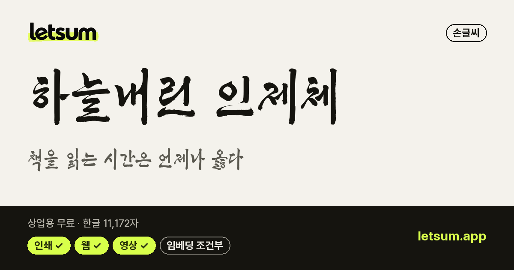
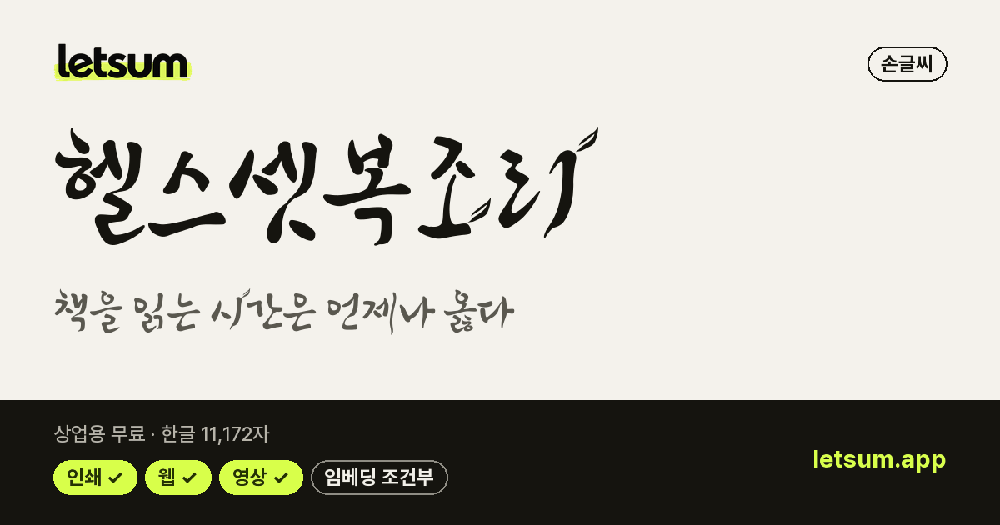
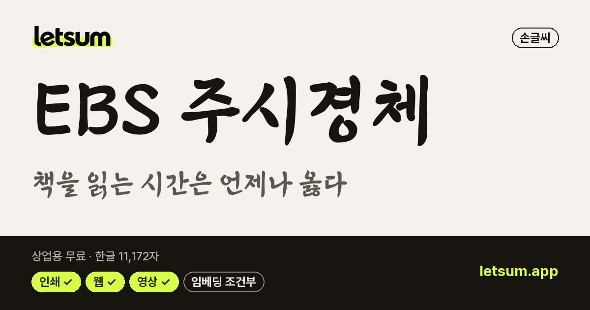

캘리그라피·붓글씨 무료 폰트 46종
메인 화면에서 이 목록 보기 →내 문장으로 미리보기·비교·필터를 함께 쓸 수 있습니다
LETSUM이 '붓글씨'·'붓펜'·'캘리'로 분류한 상업용 무료 한글 폰트입니다. 전통 행사·명절 카드·감성 문구처럼 손으로 쓴 붓 맛이 필요한 곳에 어울립니다.
라이선스 원문 대조 · 다운로드는 원 배포처로 연결 · 목록 갱신 2026-10-30 · 견본 이미지를 누르면 상세 정보와 내 문장 미리보기로 갑니다.
 나눔손글씨 붓손글씨 · 굵기 1종 · 한글 11,172자OFL · 인쇄·웹·영상·BI/CI 가능
나눔손글씨 붓손글씨 · 굵기 1종 · 한글 11,172자OFL · 인쇄·웹·영상·BI/CI 가능 연성디스플레이 · 굵기 1종 · 한글 11,172자OFL · 인쇄·웹·영상·BI/CI 가능
연성디스플레이 · 굵기 1종 · 한글 11,172자OFL · 인쇄·웹·영상·BI/CI 가능 기랑해랑디스플레이 · 굵기 1종 · 한글 11,172자OFL · 인쇄·웹·영상·BI/CI 가능
기랑해랑디스플레이 · 굵기 1종 · 한글 11,172자OFL · 인쇄·웹·영상·BI/CI 가능 독도디스플레이 · 굵기 1종 · 한글 11,172자OFL · 인쇄·웹·영상·BI/CI 가능
독도디스플레이 · 굵기 1종 · 한글 11,172자OFL · 인쇄·웹·영상·BI/CI 가능 동해독도손글씨 · 굵기 1종 · 한글 11,172자OFL · 인쇄·웹·영상·BI/CI 가능
동해독도손글씨 · 굵기 1종 · 한글 11,172자OFL · 인쇄·웹·영상·BI/CI 가능 완도희망체디스플레이 · 굵기 1종 · 한글 2,479자공공누리 1유형 · 인쇄·웹·영상·BI/CI 가능
완도희망체디스플레이 · 굵기 1종 · 한글 2,479자공공누리 1유형 · 인쇄·웹·영상·BI/CI 가능 Mapo다카포명조 · 굵기 1종 · 한글 2,798자공공누리 1유형 · 인쇄·웹·영상·BI/CI 가능
Mapo다카포명조 · 굵기 1종 · 한글 2,798자공공누리 1유형 · 인쇄·웹·영상·BI/CI 가능 Tlab신영복체손글씨 · 굵기 1종 · 한글 2,666자OFL · 인쇄·웹·영상·BI/CI 가능
Tlab신영복체손글씨 · 굵기 1종 · 한글 2,666자OFL · 인쇄·웹·영상·BI/CI 가능 KCC 안중근체손글씨 · 굵기 1종 · 한글 2,666자OFL · 인쇄·웹·영상·BI/CI 가능
KCC 안중근체손글씨 · 굵기 1종 · 한글 2,666자OFL · 인쇄·웹·영상·BI/CI 가능 Mapo애민명조 · 굵기 1종 · 한글 2,794자공공누리 1유형 · 인쇄·웹·영상·BI/CI 가능
Mapo애민명조 · 굵기 1종 · 한글 2,794자공공누리 1유형 · 인쇄·웹·영상·BI/CI 가능 Mapo홍대프리덤디스플레이 · 굵기 1종 · 한글 2,799자공공누리 1유형 · 인쇄·웹·영상·BI/CI 가능
Mapo홍대프리덤디스플레이 · 굵기 1종 · 한글 2,799자공공누리 1유형 · 인쇄·웹·영상·BI/CI 가능 도봉옛길체손글씨 · 굵기 1종 · 한글 2,780자공공누리 1유형 · 인쇄·웹·영상·BI/CI 가능
도봉옛길체손글씨 · 굵기 1종 · 한글 2,780자공공누리 1유형 · 인쇄·웹·영상·BI/CI 가능 KCC김훈체손글씨 · 굵기 1종 · 한글 2,666자OFL · 인쇄·웹·영상·BI/CI 가능
KCC김훈체손글씨 · 굵기 1종 · 한글 2,666자OFL · 인쇄·웹·영상·BI/CI 가능 KCC김환기체손글씨 · 굵기 1종 · 한글 11,172자OFL · 인쇄·웹·영상·BI/CI 가능
KCC김환기체손글씨 · 굵기 1종 · 한글 11,172자OFL · 인쇄·웹·영상·BI/CI 가능 한글재민3.0명조 · 굵기 1종 · 한글 2,350자OFL · 인쇄·웹·영상·BI/CI 가능
한글재민3.0명조 · 굵기 1종 · 한글 2,350자OFL · 인쇄·웹·영상·BI/CI 가능 학교안심 소나기손글씨 · 굵기 1종 · 한글 2,350자OFL · 인쇄·웹·영상·BI/CI 가능
학교안심 소나기손글씨 · 굵기 1종 · 한글 2,350자OFL · 인쇄·웹·영상·BI/CI 가능 학교안심 투호손글씨 · 굵기 1종 · 한글 2,780자OFL · 인쇄·웹·영상·BI/CI 가능
학교안심 투호손글씨 · 굵기 1종 · 한글 2,780자OFL · 인쇄·웹·영상·BI/CI 가능 KCC손기정체손글씨 · 굵기 1종 · 한글 11,172자OFL · 인쇄·웹·영상·BI/CI 가능
KCC손기정체손글씨 · 굵기 1종 · 한글 11,172자OFL · 인쇄·웹·영상·BI/CI 가능 속초바다 손글씨손글씨 · 굵기 1종 · 한글 2,780자공공누리 1유형 · 인쇄·웹·영상·BI/CI 가능
속초바다 손글씨손글씨 · 굵기 1종 · 한글 2,780자공공누리 1유형 · 인쇄·웹·영상·BI/CI 가능 영주선비체손글씨 · 굵기 1종 · 한글 2,350자공공누리 1유형 · 인쇄·웹·영상·BI/CI 가능
영주선비체손글씨 · 굵기 1종 · 한글 2,350자공공누리 1유형 · 인쇄·웹·영상·BI/CI 가능 조선궁서체손글씨 · 굵기 1종 · 한글 2,932자조선일보 무료 이용 · 인쇄·웹·영상·BI/CI 가능
조선궁서체손글씨 · 굵기 1종 · 한글 2,932자조선일보 무료 이용 · 인쇄·웹·영상·BI/CI 가능 포천막걸리체손글씨 · 굵기 1종 · 한글 2,479자공공누리 1유형 · 인쇄·웹·영상·BI/CI 가능
포천막걸리체손글씨 · 굵기 1종 · 한글 2,479자공공누리 1유형 · 인쇄·웹·영상·BI/CI 가능
하늘내린 인제체손글씨 · 굵기 1종 · 한글 11,172자인제군 무료 이용 · 인쇄·웹·영상 가능 학교안심 붓펜손글씨 · 굵기 3종 · 한글 2,350자OFL · 인쇄·웹·영상·BI/CI 가능
학교안심 붓펜손글씨 · 굵기 3종 · 한글 2,350자OFL · 인쇄·웹·영상·BI/CI 가능
헬스셋복조리손글씨 · 굵기 1종 · 한글 11,172자헬스셋 무료 이용 · 인쇄·웹·영상 가능헬스셋조릿대손글씨 · 굵기 1종 · 한글 11,172자헬스셋 무료 이용 · 인쇄·웹·영상 가능
EBS 주시경체손글씨 · 굵기 3종 · 한글 11,172자EBS 무료 이용 · 인쇄·웹·영상 가능 KCC임권택체손글씨 · 굵기 1종 · 한글 11,172자OFL · 인쇄·웹·영상·BI/CI 가능
KCC임권택체손글씨 · 굵기 1종 · 한글 11,172자OFL · 인쇄·웹·영상·BI/CI 가능 경복궁 수문장 본문체고딕 · 굵기 3종 · 한글 11,172자공공누리 1유형 · 인쇄·웹·영상·BI/CI 가능
경복궁 수문장 본문체고딕 · 굵기 3종 · 한글 11,172자공공누리 1유형 · 인쇄·웹·영상·BI/CI 가능 경복궁 수문장 제목체디스플레이 · 굵기 3종 · 한글 11,172자공공누리 1유형 · 인쇄·웹·영상·BI/CI 가능
경복궁 수문장 제목체디스플레이 · 굵기 3종 · 한글 11,172자공공누리 1유형 · 인쇄·웹·영상·BI/CI 가능 그리운김정원체손글씨 · 굵기 1종 · 한글 2,780자OFL · 인쇄·웹·영상·BI/CI 가능
그리운김정원체손글씨 · 굵기 1종 · 한글 2,780자OFL · 인쇄·웹·영상·BI/CI 가능 김정철_손글씨체손글씨 · 굵기 3종 · 한글 11,172자OFL · 인쇄·웹·영상·BI/CI 가능
김정철_손글씨체손글씨 · 굵기 3종 · 한글 11,172자OFL · 인쇄·웹·영상·BI/CI 가능 아산 이순신체손글씨 · 굵기 2종 · 한글 11,172자공공누리 1유형 · 인쇄·웹·영상·BI/CI 가능
아산 이순신체손글씨 · 굵기 2종 · 한글 11,172자공공누리 1유형 · 인쇄·웹·영상·BI/CI 가능 영양군 음식디미방체손글씨 · 굵기 1종 · 한글 11,172자공공누리 1유형 · 인쇄·웹·영상·BI/CI 가능
영양군 음식디미방체손글씨 · 굵기 1종 · 한글 11,172자공공누리 1유형 · 인쇄·웹·영상·BI/CI 가능 예산추사사랑체손글씨 · 굵기 2종 · 한글 2,350자공공누리 1유형 · 인쇄·웹·영상·BI/CI 가능
예산추사사랑체손글씨 · 굵기 2종 · 한글 2,350자공공누리 1유형 · 인쇄·웹·영상·BI/CI 가능 전주완판본체 각명조 · 굵기 3종 · 한글 11,172자공공누리 1유형 · 인쇄·웹·영상·BI/CI 가능
전주완판본체 각명조 · 굵기 3종 · 한글 11,172자공공누리 1유형 · 인쇄·웹·영상·BI/CI 가능 전주완판본체 순명조 · 굵기 3종 · 한글 11,172자공공누리 1유형 · 인쇄·웹·영상·BI/CI 가능
전주완판본체 순명조 · 굵기 3종 · 한글 11,172자공공누리 1유형 · 인쇄·웹·영상·BI/CI 가능 정선 아리랑 뿌리체손글씨 · 굵기 1종 · 한글 2,479자공공누리 1유형 · 인쇄·웹·영상·BI/CI 가능
정선 아리랑 뿌리체손글씨 · 굵기 1종 · 한글 2,479자공공누리 1유형 · 인쇄·웹·영상·BI/CI 가능 정선 아리랑 혼체손글씨 · 굵기 1종 · 한글 2,479자공공누리 1유형 · 인쇄·웹·영상·BI/CI 가능
정선 아리랑 혼체손글씨 · 굵기 1종 · 한글 2,479자공공누리 1유형 · 인쇄·웹·영상·BI/CI 가능 정선 아리랑체손글씨 · 굵기 1종 · 한글 2,479자공공누리 1유형 · 인쇄·웹·영상·BI/CI 가능
정선 아리랑체손글씨 · 굵기 1종 · 한글 2,479자공공누리 1유형 · 인쇄·웹·영상·BI/CI 가능 제주한라산체손글씨 · 굵기 1종 · 한글 11,172자공공누리 1유형 · 인쇄·웹·영상·BI/CI 가능
제주한라산체손글씨 · 굵기 1종 · 한글 11,172자공공누리 1유형 · 인쇄·웹·영상·BI/CI 가능 칠곡할매권안자체손글씨 · 굵기 1종 · 한글 11,172자공공누리 1유형 · 인쇄·웹·영상·BI/CI 가능
칠곡할매권안자체손글씨 · 굵기 1종 · 한글 11,172자공공누리 1유형 · 인쇄·웹·영상·BI/CI 가능 칠곡할매김영분체손글씨 · 굵기 1종 · 한글 11,172자공공누리 1유형 · 인쇄·웹·영상·BI/CI 가능
칠곡할매김영분체손글씨 · 굵기 1종 · 한글 11,172자공공누리 1유형 · 인쇄·웹·영상·BI/CI 가능 칠곡할매이원순체손글씨 · 굵기 1종 · 한글 11,172자공공누리 1유형 · 인쇄·웹·영상·BI/CI 가능
칠곡할매이원순체손글씨 · 굵기 1종 · 한글 11,172자공공누리 1유형 · 인쇄·웹·영상·BI/CI 가능 칠곡할매이종희체손글씨 · 굵기 1종 · 한글 11,172자공공누리 1유형 · 인쇄·웹·영상·BI/CI 가능
칠곡할매이종희체손글씨 · 굵기 1종 · 한글 11,172자공공누리 1유형 · 인쇄·웹·영상·BI/CI 가능 칠곡할매추유을체손글씨 · 굵기 1종 · 한글 11,172자공공누리 1유형 · 인쇄·웹·영상·BI/CI 가능
칠곡할매추유을체손글씨 · 굵기 1종 · 한글 11,172자공공누리 1유형 · 인쇄·웹·영상·BI/CI 가능자주 묻는 질문
'무료 폰트'면 상업적으로 써도 되나요?
아닙니다. 개인 용도만 무료인 폰트도 많고, 상업용 무료라도 로고(BI/CI)·영상·웹폰트 임베딩·포장지 사용은 따로 막아 둔 경우가 있습니다. LETSUM은 폰트마다 라이선스 원문을 대조해 항목별 사용 범위를 표로 보여 줍니다.
무료 폰트로 로고를 만들어도 되나요? (로고 폰트 저작권)
폰트마다 다릅니다. 많은 무료 폰트가 'BI/CI(회사명·브랜드명·로고)' 사용을 따로 금지하거나 조건을 둡니다. 이 목록은 라이선스 원문에서 BI/CI 사용이 허용된 폰트만 모은 것입니다.
무료 폰트를 다운로드한 뒤 어떻게 적용하나요?
받은 압축(zip) 파일을 풀고, 폰트 파일(.ttf·.otf)을 윈도우는 오른쪽 클릭 → '모든 사용자용으로 설치', 맥은 더블클릭 → '서체 설치'로 설치합니다. 쓰던 프로그램(파워포인트·포토샵 등)을 껐다 켜면 글꼴 목록에 나타납니다.
다른 무료 폰트 목록
상업용 무료 한글 폰트 560무료 고딕 폰트 150무료 명조(바탕) 폰트 40무료 손글씨 폰트 230귀여운 폰트 83예쁜 감성 폰트 217제목용 폰트 140레트로·픽셀 폰트 26유튜브 썸네일 폰트 173PPT 폰트 70로고 폰트 502무료 한글 웹폰트 51011,172자 지원 폰트 322한자 지원 폰트 41옛한글 지원 폰트 4OFL 한글 폰트 337공공누리 무료 폰트 123코딩 폰트 14무료 영문 폰트 638딩벳·아이콘 폰트 48산세리프 영문 폰트 277세리프 영문 폰트 138영문 필기체·손글씨 폰트 79영문 제목·로고 폰트 117영문 코딩 폰트 27가변 영문 폰트 216다국어 지원 영문 폰트 320무료 아이콘 폰트 29바코드 폰트 7이모지·기호 폰트 5시안·데이터 표현 폰트 7
※ 사용 범위는 참고용이며, 정확한 범위는 이용 전 저작권자의 원문 라이선스로 확인하세요. 모든 폰트의 저작권은 각 저작권자에게 있습니다.